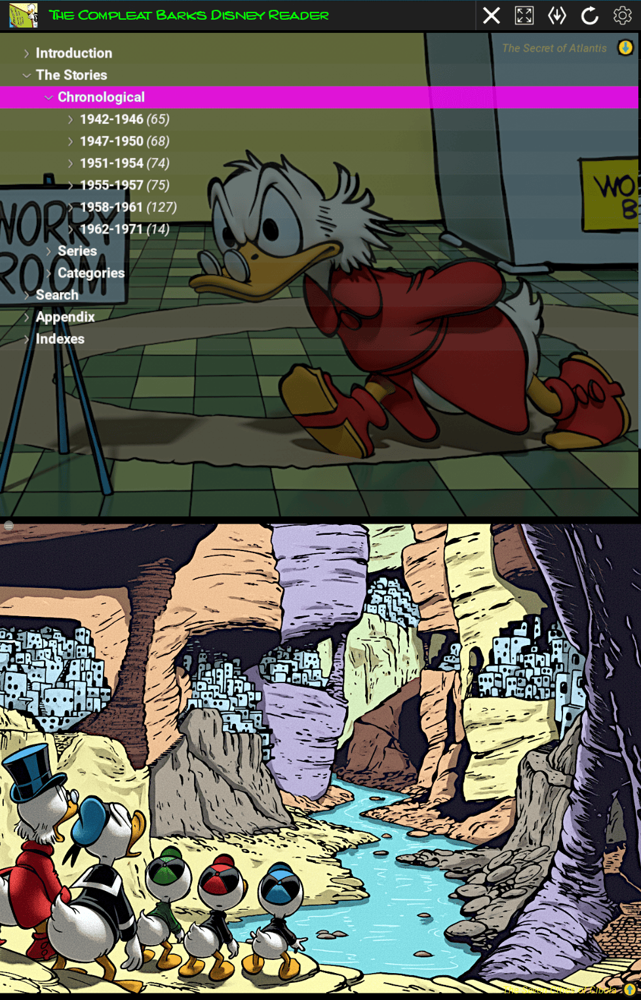
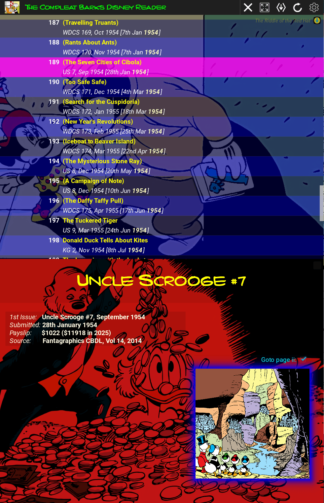
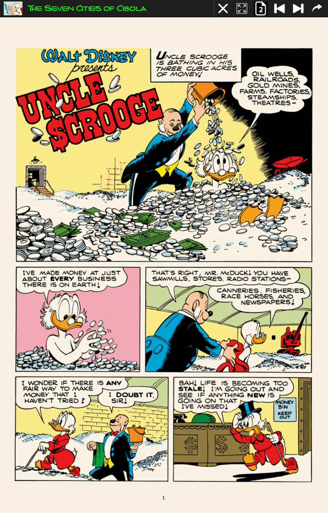
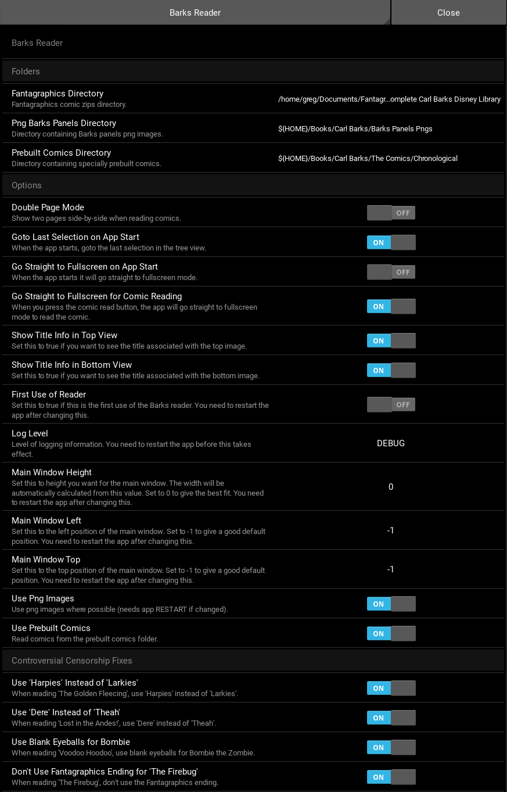
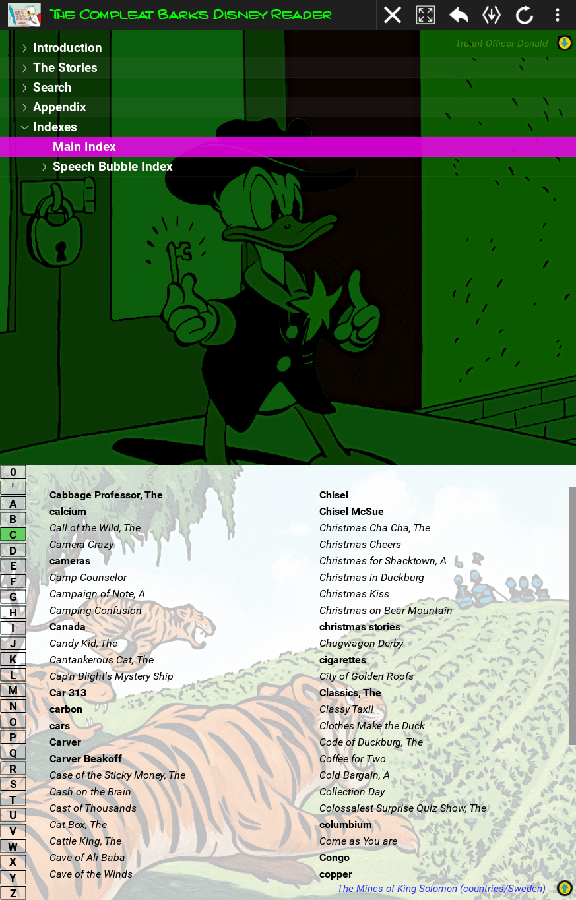
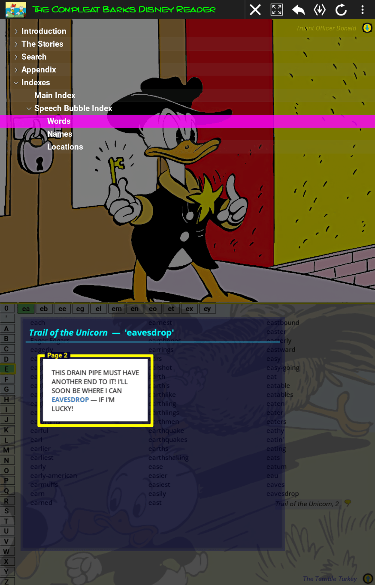
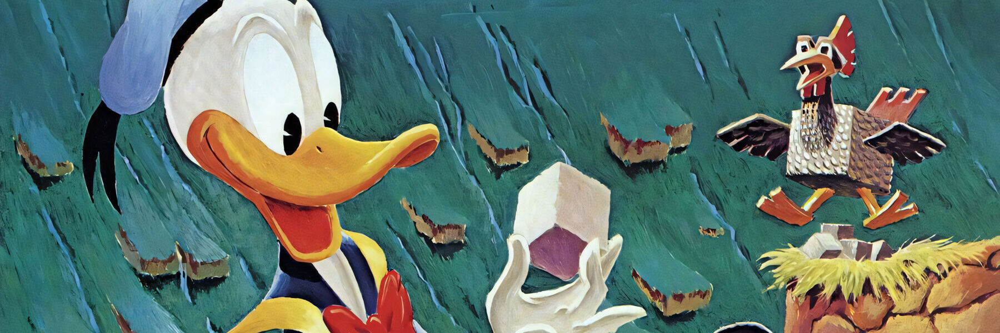
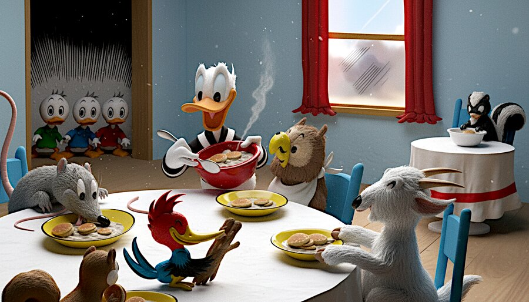

Every Barks Disney story — indexed, searchable, uncensored
The Compleat Barks Disney Reader is a multi-platform desktop app for reading your digital copy of the Fantagraphics Complete Carl Barks Disney Library. You supply your own Fantagraphics comic zips — the app does the rest.
- Browse and read every story chronologically, by series, or by category
- Censorship removed: language fixes, plus Silent Night, Good Deeds, and Bill Collectors restored
- Title, tag, and speech bubble indexes and searches, linked straight into the stories
- Hundreds of favourite Barks panels as backgrounds and enhancements
- Fast reader with original comic book page numbering and an optional double page mode
- Works on Windows, macOS, and Linux — laptops, 2-in-1 touchscreens, even a 4K TV
Screenshots
Main Window

Selecting a Title

Reading a Story

Settings

Full Index with Links

Speech Bubble Index with Links

What's Included
The download package includes the main application executable along with approximately 2GB of data files (favourite panels and censorship fixes). Everything you need to get started is included — no additional downloads required. You need to supply your own legally obtained Fantagraphics digital library in a single directory of DRM-free .cbz or .zip files.
About This Project
I have loved Barks' stories since childhood, and as I got older, I dreamt of a complete uncensored Barks library. That almost happened with the CBL and CBL in color, except, sadly, for Darkest Africa and Voodoo Hoodoo. The Fantagraphics library is pretty good (although I'm not a fan of the smaller page size). But the digital edition of the library is a game-changer. This democratizes access to all Barks' Disney work and will allow quality uncensored presentations in the future. My hope is The Compleat Barks Disney Reader will be a good start to this.
Features
Here are the main features of The Compleat Barks Disney Reader.

Chronological Access to All Stories
The table of contents is a treeview allowing you to browse titles chronologically, or by series, or category. Story ordering is done using Barks's submission dates — the dates he recorded as having submitted a story to Western Publishing. Chronological ordering is also maintained through Series and Category titles.
Censorship Removed
Unfortunately, in later volumes, censorship started creeping into the Fantagraphics editions. Silent Night and Good Deeds were omitted without comment, and a page was deleted from The Bill Collectors. Language was changed. These have been painstakingly restored using digitised images and text from The Fine Art of Donald Duck and the CBL. Hopefully, you'll find these restored pages comparable in quality to the other uncensored stories.
Longstanding censorship has also been tackled (this may be a bit controversial but can be turned off): 'Larkie' has been replaced with 'Harpie' in The Golden Fleecing, Bombie's eyes are white without pupils in Voodoo Hoodoo, and 'Theah' (and similar Southern words) have been replaced with 'Dere' in Lost in the Andes!
Copious Amounts of Barks Panels as Backgrounds
There are hundreds of individual comic panels scattered throughout the app as backgrounds or story enhancements. And there is a view where you can randomly cycle through the panels and select the story the panel comes from. Also, there are many, many AI versions of panels that give fun re-interpretations of Barks' art.
When you click on a story title you are taken to a view with a panel from the story as a background together with the story title, first published edition, submission date, how much Barks was paid for the story, the Fantagraphics volume and year, and optionally, brief background notes to the story. There is another smaller panel image in the view that acts as a portal to the actual comic book reader for the story.
You Supply Your Fantagraphics Zips
All you need to do is make sure all your Fantagraphics comic zips are in a single directory and the name of each zip starts with the volume number — so '01' to '29'. The zips must be in DRM-free '.zip' or '.cbz' format and not 'rar' format. If you have a volume in the 'rar' format you just need to un-rar it, then zip it up.
If you put your zips in a folder called "Fantagraphics Complete Carl Barks Disney Library", and it's on the Barks Reader's search path (see the Installation tab) it will be automatically added to the reader's configuration. Otherwise, when you first use the app, you will have the opportunity to tell it where to look for the zips.
Fullscreen Reader
When you select a story through the title portal image, the comic is presented in a new window. Each comic page is centered so there is consistent positioning from page to page, and the page numbering uses the original comic page numbering not the Fantagraphics numbering. There are menu options to toggle fullscreen and double page modes, and go to beginning or end, and go to a page number. The single page fullscreen mode is very effective on a large 2-in-1 touchscreen laptop while the double page fullscreen mode looks great on a 4K TV. (You'll need a NUC-like device to drive the TV though.)
Titles/Tags and Speech Bubble Index
There are two indexes: a titles/tags index and a speech bubble index. The Titles/Tags index contains alphabetic access to all stories via title names or tags. The speech bubble index contains all words used in speech bubbles or narration boxes and sound effects and signs from all stories. All items in each index are linked to the associated page within a story so you can start reading the story directly from the link. There are also corresponding Search functions for Titles/Tags and speech bubbles.
Works on Windows, macOS, and Linux
The app is written in Python and has been run and tested on Windows, Ubuntu, and macOS. With further work, it should be possible to get it running on Android and iPads.
Download The Compleat Barks Disney Reader
Get the latest version of The Compleat Barks Disney Reader for your platform. All downloads are hosted on GitHub Releases, and the links below always point to the latest release.
Installation
After downloading, head to the Installation tab for platform-specific setup instructions.
Installation Guide
NOTE: The Compleat Barks Disney Reader is a Portable Application. It does not use a traditional installer, which is why it must be manually placed in a user-directory rather than system folders like 'Program Files' or 'Applications'.
Follow these platform-specific instructions to install the app on your system.

Quick Start
- Download the executable (on macOS: the zipped app bundle) and both data zip files from the Download tab
- Move all three files to a folder where you have write permissions (NOT "C:\Program Files" or "/Applications")
- Make the executable runnable (Linux:
chmod +x; macOS: unzip to get the.app) - Run the executable — first launch will handle the rest
First Launch — Please Be Patient
The app is fully self-contained — no internet connection is needed to install or run it. Depending on the speed of your machine, the first launch may take a minute or two: the executable self-extracts, then unzips the supporting data packs. Once these are done (and providing there are no errors) you will get a welcome screen popup — press OK and the reader app will start. Subsequent app launches should be fairly quick.
Windows Installation
Step 1: Download
Download the latest Windows release from the Download tab or directly from GitHub Releases. The files to download are:
- "barks-reader-win.exe"
- "barks-reader-data-1.zip"
- "barks-reader-data-2.zip"
Step 2: Move the Downloaded Files
IMPORTANT: Do NOT extract to "C:\Program Files" — the application needs write access to create its runtime environment.Move the executable and data files to your preferred location but note that this must be a directory where you have write permissions, such as:
- "C:\Users\YourUsername\BarksReader"
- "C:\BarksReader"
- "C:\Users\YourUsername\Documents\BarksReader"
Step 3: Run the Application
Navigate to the new app folder and double-click barks-reader-win.exe to launch the application.
You may need to allow the app through Windows Defender SmartScreen on first run.
You can also create a shortcut by right-clicking: barks-reader-win.exe → Send to → Desktop (create shortcut) for easy access.
macOS Installation
Step 1: Download
Download the latest macOS release from the Download tab or directly from GitHub Releases. The files to download are:
- "barks-reader-macos.zip" (Apple Silicon Macs) or "barks-reader-macos-x64.zip" (Intel Macs)
- "barks-reader-data-1.zip"
- "barks-reader-data-2.zip"
Step 2: Unzip the App and Move the Files
Double-click "barks-reader-macos.zip" in Finder to unzip it — you get the app bundle "barks-reader-macos.app". (Do NOT unzip the two data zips — the app does that itself.)
Move the .app and the two data zips into the same user-writable folder, such as:
- "~/Applications/BarksReader" (create folder if it doesn't exist)
- "~/BarksReader"
- "~/Documents"
Do NOT put it in "/Applications" — the app installs its data and configuration into the folder beside the app bundle, so it needs write permissions there.
Step 3: Grant Permissions
The app is not code-signed, so macOS quarantines the downloaded copy and will refuse to open it at first. Either:
- Try to open the app once, then go to System Settings → Privacy & Security, scroll down, and click "Open Anyway" (this is the required route on macOS 15 and newer, where right-click → Open no longer works for unsigned apps); or
- Remove the quarantine flag in Terminal:
xattr -dr com.apple.quarantine ~/Applications/BarksReader/barks-reader-macos.app
Step 4: Run the Application
After granting permissions, double-click "barks-reader-macos.app" and the application will launch normally. Future launches can be done by double-clicking.
Linux Installation
Step 1: Download
Download the latest Linux release from the Download tab or directly from GitHub Releases. The files to download are:
- "barks-reader-linux"
- "barks-reader-data-1.zip"
- "barks-reader-data-2.zip"
Step 2: Move the Downloaded Files
Move the downloaded files to a user-writable location such as:
- "~/opt/barks-reader"
- "~/barks-reader"
- Any directory in your home folder
You will need to make "barks-reader-linux" executable:
chmod +x barks-reader-linux
Step 3: Run the Application
Run the executable "barks-reader-linux" either from a file explorer or a terminal.
On launch the app automatically installs a menu entry (a .desktop file in "~/.local/share/applications/"), so after the first run you can start it from your desktop's application menu or dock.
Your Fantagraphics Zips (All Platforms)
Organise Your Fantagraphics Zips
Your Fantagraphics comic zips must be in a single folder and can be either '.zip' or '.cbz' files. The first part of each volume's filename must be the volume number, from '01' to '29'. For example:
- 01 - Donald Duck - Finds Pirate Gold.cbz
- 02 - Donald Duck - Frozen Gold.zip
- ...
- 28 - Uncle Scrooge - 'Cave of Ali Baba'.zip
- 29 - Donald Duck - 'The Lonely Lighthouse on Cape Quack'.cbz
Note: The app manipulates, centers, and reorganizes comic book images, so encrypted or proprietary file formats (such as native Kindle or Comixology files) are not supported. You must have DRM-free .cbz or .zip files.
Optional — Help the App Find Them Automatically
If you put your Fantagraphics comic zips in a folder called "Fantagraphics Complete Carl Barks Disney Library", and that folder is under one of the locations the app searches, it will be automatically added to the reader's configuration. Otherwise, on first use, the app will ask you where to look. The searched locations are the app folder itself, plus:
| Windows | "C:\Users\YourUsername\BarksReader", "...\Documents", "...\Books" |
| macOS | "~/Applications/BarksReader", "~/BarksReader", "~/Documents", "~/Books" |
| Linux | "~/opt/barks-reader", "~/Documents", "~/Books" (a symlink works too) |
What Happens on First Launch
The First Launch Installs Everything
When the application is first launched it will do further installation steps (on the very first launch only):
- It will unzip "barks-reader-data-1.zip" and "barks-reader-data-2.zip" into a "Reader Files" folder beside the executable (on macOS: beside the .app bundle),
- It will create the necessary default configuration files in a "config" folder in the same place,
- It will search for your "Fantagraphics Complete Carl Barks Disney Library" folder in the locations listed above,
- And finally, it will launch the actual reader app.
If anything goes wrong, an install log named "barks-reader-installer-<timestamp>.log" is written beside the executable.
After the First Launch
The "barks-reader-data-1.zip" and "barks-reader-data-2.zip" files are no longer needed, and you can safely delete them.
System Requirements
The app runs comfortably on most desktops and laptops from the last decade or so.
| Component | Requirement |
|---|---|
| Operating System | Windows 10/11, macOS 12+ (Apple Silicon or Intel), or Linux (Ubuntu 20.04+, similar) |
| Memory (RAM) | 4 GB minimum, 8 GB or more recommended |
| Storage | 15 GB available space (includes app, ~2 GB of data files, and your Fantagraphics zips); an SSD is strongly recommended |
| Display | 1920x1080 or higher recommended (the app window needs at least ~900 pixels of width) |
| Internet | None — only needed to download the app itself |
Real-World Performance
Performance is hard to gauge accurately, so here are two real data points. The app works very well with Ubuntu 24.04 on an AMD Ryzen 7 5700G PC with SSDs and 16GB of RAM. A slow example is Windows 10 on an Intel i3-8109U PC with 8GB RAM, where the first-launch installation takes 4 minutes and subsequent launches are slow — but once launched it's OK. In general: a reasonably modern CPU and an SSD make the biggest difference.
Additional Notes
- No internet connection is needed to install or run the app — it is fully self-contained (you only need one to download it).
- You must supply your own DRM-free comic zips for the Fantagraphics Complete Carl Barks Disney Library.
Troubleshooting
Common issues and their solutions. If your problem isn't listed here, please check our GitHub Issues page.
🛡️ Antivirus or SmartScreen blocks the app
Solutions:
- Because the app is an unsigned, self-extracting executable, some Antivirus software (or Windows SmartScreen) may flag it as suspicious. This is a false positive.
- In Windows SmartScreen, click "More info" and then "Run anyway".
- If your Antivirus removes the executable, you may need to add an exception or exclusion for your BarksReader installation folder.
❌ Application won't start / crashes on launch
Solutions:
- On a first launch: ensure both data zip files ("barks-reader-data-1.zip" and "barks-reader-data-2.zip") are in the same directory as the executable (on macOS: beside the .app bundle)
- Check that the app directory has write permissions (do not install to "C:\Program Files" on Windows or "/Applications" on macOS)
- Don't rename the executable — the first-launch installer expects its original name
- Look for an install log named "barks-reader-installer-<timestamp>.log" beside the executable — it says exactly what failed
🔒 "App can't be opened" error (macOS)
Solutions:
- Try to open the app once, then go to System Settings → Privacy & Security and click "Open Anyway" (required on macOS 15+, where right-click → Open no longer works for unsigned apps)
- On older macOS versions, right-clicking the app and selecting "Open" may be enough
- If still blocked, run in Terminal:
xattr -dr com.apple.quarantine /path/to/barks-reader-macos.app
⚠️ First launch failed or data files are missing
Solutions:
- Make sure both data zips downloaded completely (each is roughly 1 GB — about 2 GB together) and are beside the executable, then launch again
- Check the install log ("barks-reader-installer-<timestamp>.log", beside the executable) for the exact error
- If a first launch failed partway through, delete the "config" and "Reader Files" folders beside the executable, make sure both data zips are present, and launch again — the installer re-runs whenever no "config" folder exists
- Check available disk space (you'll need around 15 GB free)
🐢 Performance issues / slow operation
Solutions:
- Close other resource-intensive applications
- Ensure you meet the recommended system requirements
- Move the app and its data files to an SSD if they're on an HDD
- Ensure your Fantagraphics zips are on an SSD rather than HDD
🔄 Updating to a new version
Steps:
- Download the new executable from GitHub Releases and replace the old one in your BarksReader folder — your "config" and "Reader Files" folders (settings, last-read pages) are kept as-is
- The data zips are only needed again if the release notes say the data packs have changed
- For a completely fresh install: delete the "config" and "Reader Files" folders, put both data zips beside the new executable, and launch — the first-launch installer will run again
- Check the GitHub Releases page for version-specific notes
Still Having Issues?
If none of these solutions work, please visit our GitHub repository and create an issue with:
- Your operating system and version
- Application version
- Detailed description of the problem
- Steps to reproduce the issue
- Any error messages or logs (including any "barks-reader-installer-<timestamp>.log" file)